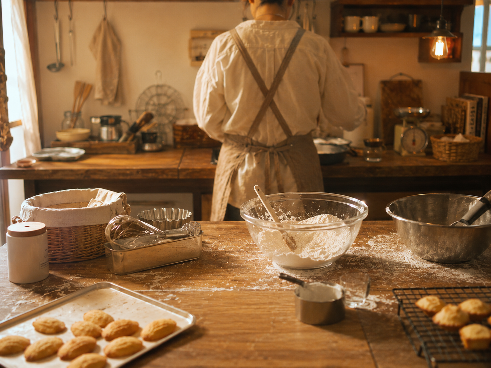

お店について
「毎日食べても飽きない」を、
「毎日食べても飽きない」を、
いちばん大事にしています。
祖母の代から受け継いだレシピを、少しずつ今の味に整えながら焼いています。特別な日のためのお菓子ではなく、「今日も食べたいな」と思ってもらえる、日常のおやつでありたい。
使う材料はできるだけシンプルに。近所の牛乳屋さんの牛乳、地元の農家さんの卵。派手さはありませんが、毎日通いたくなるお店を、家族3人でこつこつ続けています。
petite douceur（プティ・ドゥスール）より